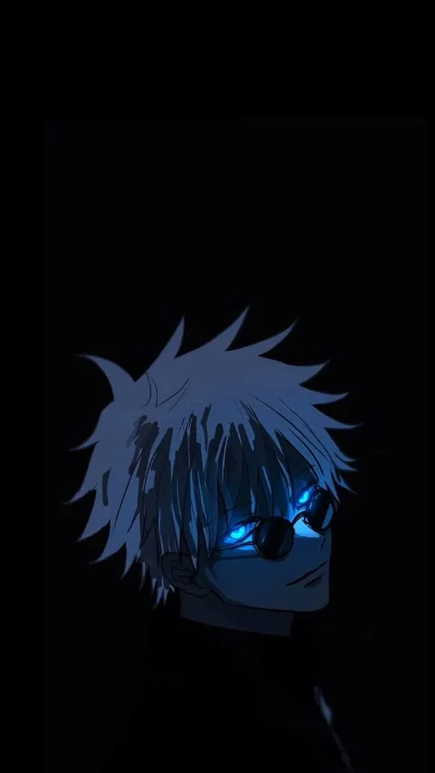
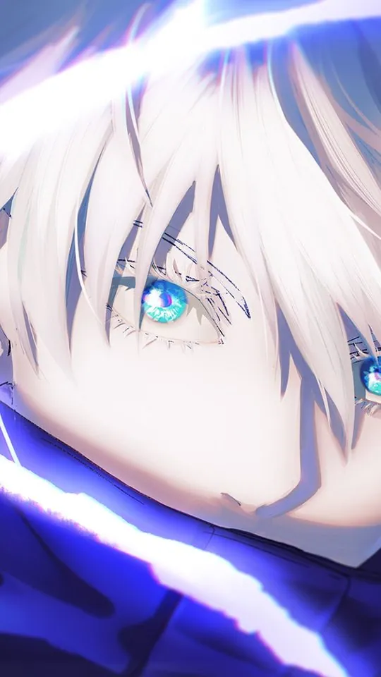

Jujutsu Kaisen Wallpapers: The Best Characters for Your Phone

A phone wallpaper has to survive being glanced at dozens of times a day, so it needs to read clearly at a small size and in a hurry. This guide works through the main Jujutsu Kaisen cast — Gojo, Sukuna, Yuji, Megumi, Nobara and Toji — and explains what each one brings to a portrait screen: the colour palette, the silhouette, and the crop that keeps their face in frame. By the end you will know which art suits a lock screen, which suits a home screen, and why the same picture can look superb in one place and awkward in the other.
Why Jujutsu Kaisen art survives on a small screen
Jujutsu Kaisen is drawn for impact rather than subtlety, and that is exactly what a phone wallpaper needs. The show's character key visuals usually isolate a single figure against a near-black background, then light them with one strong colour — a blue cursed-energy glow, a red flare, a flash of white. A dark ground plus one saturated highlight is easy to read at thumbnail size because there is only one thing for the eye to find. The series also leans on hard, simple shapes: Gojo's blindfold, Sukuna's tattooed face, Nobara's hammer, Megumi's shikigami. Silhouettes carry the character even when fine detail is lost, which matters when a clock, a row of app icons or a notification sits on top of the picture.

Gojo Satoru: the blue-and-white anchor
Gojo is the safest choice for a lock screen, and the reason is contrast. His design is built from white hair, pale skin and a black uniform with white trim, all set against the deep blue of his cursed energy and the cold glass-blue of his Six Eyes. Put him on a black background and the white hair reads instantly; put him on a pale background and the same hair disappears. For a phone, the eyes are the focal point, so crop the image so his face sits in the upper third of the screen and the blindfold — or the revealed eyes — lands above the clock. The blindfolded look is calmer and better for a lock screen; the glowing-eye look is louder and works better on a home screen where you see it less often. Hollow Purple art, with its blue-to-violet gradient, makes a strong abstract wallpaper even if you crop the character almost entirely out of frame.

Sukuna: red, black and pure menace
Sukuna's palette is the opposite of Gojo's and just as reliable. He is built from red, black and the flat grey of skin marked with black tattoos, so his art almost always sits on a dark base with one hot red accent — a slash of cursed energy, a blood-red aura, the red of his four eyes. That red-on-black combination is the single most legible palette on a phone, which is why so many Sukuna wallpapers look sharp even at icon size. The catch is clutter. Sukuna's best art is often busy, full of extra eyes, shrine architecture or floating debris, and all of that fights the clock. Choose the cleanest version you can find: a head-and-shoulders crop with the tattoos visible and the background pushed to near-black. His markings are his identity, so never crop below the jaw — the face paint is what tells you it is Sukuna and not just a red silhouette.
Yuji and Megumi: the everyday picks
Yuji Itadori and Megumi Fushiguro are the two you reach for when you want a wallpaper that does not shout. Yuji's palette is warm and human — salmon-pink hair, a black uniform, and a soft amber glow when he uses his cursed energy. It sits comfortably behind white text and a bright clock, so it suits a home screen you look at constantly. Megumi is cooler and quieter: black spiky hair, dark clothing, and the grey-green of his Ten Shadows shikigami, most often the two Divine Dogs. His art tends to have more empty space than the others, which is a gift on a phone because the empty space is where your clock and icons go. If you want a character who is present without dominating, Megumi is the best-behaved wallpaper in the cast.
The table below is a quick crop cheat sheet; adjust the "best screen" column to your own icon layout.
| Character | Palette | Best screen | Crop tip |
|---|---|---|---|
| Gojo | White, black, glass blue | Lock | Face in the upper third; keep the blindfold above the clock |
| Sukuna | Red, black, grey | Lock | Never crop below the jaw; keep the tattoos in frame |
| Yuji | Pink, black, amber | Home | Leave the lower half dark for icons |
| Megumi | Black, grey-green | Home | Use the empty space for the clock |
| Nobara | Orange-brown, cream | Home | Keep the hammer or nails visible as a silhouette |
| Toji | Black, olive, skin tone | Lock | Side-on crops work best; the lip scar should stay visible |

Nobara and Toji: the two that reward a specific crop
Nobara Kugisaki is the warmest design in the main trio — orange-brown hair, a cream and brown school uniform, and the bright metal of her hammer and nails. Her palette works beautifully against white text, which makes her a natural home-screen pick, but her art is often mid-action and therefore busy. The fix is to find a version where the hammer or a cluster of nails reads as a clear silhouette, then crop so that shape sits in the lower half of the screen and her face sits above it. Toji Fushiguro is the opposite problem: he is almost entirely black and olive, with a scar across one side of his mouth and the Inverted Spear of Heaven as his signature object. Because he is so dark, Toji wallpapers need a lighter background — a grey sky, a lit window, concrete — or they turn into a black rectangle on an OLED screen. Side-on crops suit him best, and you should always keep the lip scar in frame, because that small detail is what makes the figure recognisable.
Before you set either of them, run through the same short checklist that keeps any Jujutsu Kaisen wallpaper readable:
- Pick the one feature that identifies the character — Nobara's hammer, Toji's scar — and protect it in the crop.
- Keep the face in the middle band of the screen and let the top third hold background for the clock.
- Choose a background that contrasts with the figure, since Toji in particular vanishes into black.
- Test the image at true size on the phone before you commit to it.

Frequently asked questions
Which Jujutsu Kaisen character makes the best phone wallpaper?
For most people, Gojo is the easiest answer because his white-on-dark contrast reads at any size. If you want something warmer and less intense, Yuji and Nobara both work well behind app icons. The honest answer is that the best wallpaper is the one whose crop fits your own icon layout, so test two or three before deciding.
Should I use the same character on my lock screen and home screen?
You can, but it often looks better to split them. A bold, high-contrast image such as Sukuna or Gojo suits the lock screen, where you only glance at it, while a calmer image such as Megumi or Yuji suits the home screen, where icons sit on top. Matching palettes across the two screens keeps the phone looking deliberate.
How do I stop the clock from covering the character's face?
Move the figure down or to one side when you crop. On most phones the clock sits in the upper portion of the lock screen, so aim to place the face in the upper third only if the image has empty space above it. If the face is the whole point, shift it to the centre and let the clock sit against a plain part of the background.
Why do dark Jujutsu Kaisen wallpapers look so good on some phones?
Because the show's key art is already built on black, and OLED screens render true black by turning those pixels off. A Sukuna or Toji image with a genuinely black background looks sharp and uses less power on an OLED display. On an LCD screen the same image can look grey and washed out, so check how it renders on your own device.